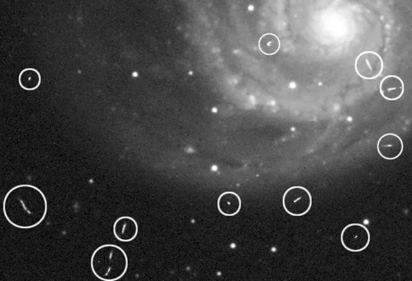

1. Cosmic-Ray Rejection#
This time we will learn how to reject, i.e., erase, the unwanted signals: Cosmic-rays (CR). CR is a loosely defined term in observational astronomy used to describe high energetic particles (or the resulting radiation) originated from extraterrestrial sources. On CCD image, CR appears as a dot, short streak, as shown in the following image (image credit Tony Hallas):

1.1. Introduction#
The most widely used algorithm for CR rejection is the L.A.Cosmic by Peter G. van Dokkum (publication link). It uses the fact that CR has sharp edges and high pixel values, so that they appear differently compared to stellar sources after median filtering.
Unfortunately, however, this is very slow in IRAF, especially for larger file sizes. The previous python version, which is available from the L.A.Cosmic website is also slow. Curtis McCully has thus developed a C-based, but can be used in Python as if it is a totally-pythonic code, and it is named as astroscrappy. It is about 20-40 times faster than pure python codes, and up to about 100 times faster than IRAF implementation. The number can even increase if you use faster algorithms using optional arguments of astroscrappy.
My experience is that, one of my friend (named X) spent 20+ hours doing the CR rejection using LA Cosmic with IRAF for the data obtained from Subaru. Of course, X could not use the computer for one full day. I didn’t check the time on my computer, but that would have been < 1 hr if I used astroscrappy.
1.2. Download Astroscrappy#
You can download it via conda:
conda install -c astropy astroscrappy
For check, you can turn IPython on and type
import astroscrappy
astroscrappy.test()
1.3. To What Images Do We Use astroscrappy?#
CR can be everywhere. Even on bias image, which should have 0-second exposure, you may see CR, because the instrument cannot have mathematically zero exposure (e.g., 0.001 second). While reading out a bias image, a CR may hit a CCD pixel, and it will appear on the bias image. On dark or flat images, which have exposure time of up to about several minutes, CR becomes extremely common.
But do we have to do CR rejection for all the FITS files we have?
No. First, it takes too much time. Secondly, if we do median combine to many of the bias, dark, and flat images, CR-hit pixels (the pixels hit by CR) can be clipped without applying the CR rejection algorithm.
For science images, however, all object images may not be identical, so we don’t do median combine. That’s why we need CR rejection to object images. According to LA Cosmic website’s Note for Users:
The program needs bias-subtracted, flat-fielded, unskysubtracted images. Flatfielding is usually not critical, bias subtraction is! If the sky was subtracted from an image, the program will add the sky back in if
skyval > 0.
It’s very simple to do such rejection: import and use.
1.4. astroscrappy Documentation#
There is no online manual of astroscrappy, but you can print it out in Python:
%load_ext version_information
import time
now = time.strftime("%Y-%m-%d %H:%M:%S (%Z = GMT%z)")
print(f"This notebook was generated at {now} ")
vv = %version_information numpy, matplotlib, astropy, astroscrappy, version_information
for i, pkg in enumerate(vv.packages):
print(f"{i} {pkg[0]:10s} {pkg[1]:s}")
This notebook was generated at 2023-08-20 19:34:25 (KST = GMT+0900)
0 Python 3.10.12 64bit [Clang 15.0.7 ]
1 IPython 8.14.0
2 OS macOS 13.1 arm64 arm 64bit
3 numpy 1.24.4
4 matplotlib 3.7.2
5 astropy 5.3.2
6 astroscrappy 1.1.1.dev8+g783f217
7 version_information 1.0.4
from pathlib import Path
import astroscrappy
import numpy as np
import ysfitsutilpy as yfu
import _tool_visualization as vis
from astropy import units as u
from astropy.io import fits
from astropy.nddata import CCDData
from astropy.stats import sigma_clipped_stats
from matplotlib import pyplot as plt
from matplotlib import rcParams
from mpl_toolkits.axes_grid1 import ImageGrid
plt.style.use('default')
rcParams.update({'font.size':12})
DATAPATH = Path("../../Tutorial_Data")
print(astroscrappy.detect_cosmics.__doc__)
detect_cosmics(indat, inmask=None, inbkg=None, invar=None, sigclip=4.5,
sigfrac=0.3, objlim=5.0, gain=1.0, readnoise=6.5,
satlevel=65536.0, niter=4, sepmed=True,
cleantype='meanmask', fsmode='median', psfmodel='gauss',
psffwhm=2.5, psfsize=7, psfk=None, psfbeta=4.765,
verbose=False)
Detect cosmic rays in a numpy array.
If you use this code, please cite the Zendo DOI: https://zenodo.org/record/1482019
Please cite the original paper which can be found at:
http://www.astro.yale.edu/dokkum/lacosmic/
van Dokkum 2001, PASP, 113, 789, 1420
(article : http://adsabs.harvard.edu/abs/2001PASP..113.1420V)
Parameters
----------
indat : float numpy array
Input data array that will be used for cosmic ray detection. This
should include the sky background (or a mean background level, added
back in after sky subtraction), so that noise can be estimated
correctly from the data values. This should be in units of "counts".
inmask : boolean numpy array, optional
Input bad pixel mask. Values of True will be ignored in the cosmic ray
detection/cleaning process. Default: None.
inbkg : float numpy array, optional
A pre-determined background image, to be subtracted from ``indat``
before running the main detection algorithm.
This is used primarily with spectroscopic data, to remove
sky lines and the cross-section of an object continuum during
iteration, "protecting" them from spurious rejection (see the above
paper). This background is not removed from the final, cleaned output
(`cleanarr`). This should be in units of "counts", the same units of indat.
This inbkg should be free from cosmic rays. When estimating the cosmic-ray
free noise of the image, we will treat ``inbkg`` as a constant Poisson
contribution to the variance.
invar : float numpy array, optional
A pre-determined estimate of the data variance (ie. noise squared) in
each pixel, generated by previous processing of ``indat``. If provided,
this is used in place of an internal noise model based on ``indat``,
``gain`` and ``readnoise``. This still gets median filtered and cleaned
internally, to estimate what the noise in each pixel *would* be in the
absence of cosmic rays. This should be in units of "counts" squared.
sigclip : float, optional
Laplacian-to-noise limit for cosmic ray detection. Lower values will
flag more pixels as cosmic rays. Default: 4.5.
sigfrac : float, optional
Fractional detection limit for neighboring pixels. For cosmic ray
neighbor pixels, a lapacian-to-noise detection limit of
sigfrac * sigclip will be used. Default: 0.3.
objlim : float, optional
Minimum contrast between Laplacian image and the fine structure image.
Increase this value if cores of bright stars are flagged as cosmic
rays. Default: 5.0.
gain : float, optional
Gain of the image (electrons / ADU). We always need to work in
electrons for cosmic ray detection. Default: 1.0
readnoise : float, optional
Read noise of the image (electrons). Used to generate the noise model
of the image. Default: 6.5.
satlevel : float, optional
Saturation of level of the image (electrons). This value is used to
detect saturated stars and pixels at or above this level are added to
the mask. Default: 65536.0.
niter : int, optional
Number of iterations of the LA Cosmic algorithm to perform. Default: 4.
sepmed : boolean, optional
Use the separable median filter instead of the full median filter.
The separable median is not identical to the full median filter, but
they are approximately the same and the separable median filter is
significantly faster and still detects cosmic rays well. Default: True
cleantype : {'median', 'medmask', 'meanmask', 'idw'}, optional
Set which clean algorithm is used:
'median': An umasked 5x5 median filter
'medmask': A masked 5x5 median filter
'meanmask': A masked 5x5 mean filter
'idw': A masked 5x5 inverse distance weighted interpolation
Default: "meanmask".
fsmode : {'median', 'convolve'}, optional
Method to build the fine structure image:
'median': Use the median filter in the standard LA Cosmic algorithm
'convolve': Convolve the image with the psf kernel to calculate the
fine structure image.
Default: 'median'.
psfmodel : {'gauss', 'gaussx', 'gaussy', 'moffat'}, optional
Model to use to generate the psf kernel if fsmode == 'convolve' and
psfk is None. The current choices are Gaussian and Moffat profiles.
'gauss' and 'moffat' produce circular PSF kernels. The 'gaussx' and
'gaussy' produce Gaussian kernels in the x and y directions
respectively. Default: "gauss".
psffwhm : float, optional
Full Width Half Maximum of the PSF to use to generate the kernel.
Default: 2.5.
psfsize : int, optional
Size of the kernel to calculate. Returned kernel will have size
psfsize x psfsize. psfsize should be odd. Default: 7.
psfk : float numpy array, optional
PSF kernel array to use for the fine structure image if
fsmode == 'convolve'. If None and fsmode == 'convolve', we calculate
the psf kernel using 'psfmodel'. Default: None.
psfbeta : float, optional
Moffat beta parameter. Only used if fsmode=='convolve' and
psfmodel=='moffat'. Default: 4.765.
verbose : boolean, optional
Print to the screen or not. Default: False.
Returns
-------
crmask : boolean numpy array
The cosmic ray mask (boolean) array with values of True where there are
cosmic ray detections.
cleanarr : float numpy array
The cleaned data array.
Notes
-----
To reproduce the most similar behavior to the original LA Cosmic
(written in IRAF), set inmask = None, satlevel = np.inf, sepmed=False,
cleantype='medmask', and fsmode='median'.
The original IRAF version distinguishes between spectroscopic and imaging
data. This version does not.
For best results on spectra, we recommend that you include an estimate of the background.
One can generally obtain this by fitting columns with a smooth function. To efficiently identify
cosmic rays, LA Cosmic and therefore astroscrappy estimates the cosmic ray free noise by smoothing
the variance using a median filter. To minimize false positives on bright sky lines, if ``inbkg`` is
provided, we do not smooth the variance contribution from the provided background. We only smooth
the variance that is in addition to the Poisson contribution from the background so that we do
not underestimate the noise (and therefore run the risk of flagging false positives) near narrow, bright
sky lines.
Note
Please note that, the default values of astroscrappy are different from the original L.A.Cosmic IRAF version (as in Notes above).
Also note that the default values differ among many different versions of L.A.Cosmic, hence there is no true default. You should find the best set of parameters for your data. You may use the following default for instance:
# I skipped two params in LACOSMIC: gain=2.0, readnoise=6.
LACOSMIC_KEYS = dict(sigclip=4.5, sigfrac=0.5, objlim=5.0,
satlevel=np.inf, pssl=0.0, niter=4,
cleantype='medmask', fsmode='median', psfmodel='gauss',
psffwhm=2.5, psfsize=7, psfk=None, psfbeta=4.765)
Actually, objlim is 1 in IRAF version of L.A.Cosmic, but that may not work correctly in some cases. Thus, I use objlim=5 as default.
1.5. Images We Will Use#
First, following is the image we will use for our purpose (they are already included in our Tutorial_Data folder.):
The original data can be accessed available here. I used the file
IBO821KVQ_FLT.fitshere.The images are taken on 2011-06-28 to 2011-07-03, which were used for [finding the fourth satellite of Pluto](https://science.nasa.gov/science-new s/science-at-nasa/2011/20jul_p4).
hdul = fits.open(DATAPATH / 'Pluto1.fits')
print(hdul.info())
Filename: ../../Tutorial_Data/Pluto1.fits
No. Name Ver Type Cards Dimensions Format
0 PRIMARY 1 PrimaryHDU 314 ()
1 SCI 1 ImageHDU 175 (513, 512) float32
2 ERR 1 ImageHDU 51 (513, 512) float32
3 DQ 1 ImageHDU 43 (513, 512) int16
4 D2IMARR 1 ImageHDU 15 (64, 32) float32
5 D2IMARR 2 ImageHDU 15 (64, 32) float32
6 WCSDVARR 1 ImageHDU 15 (64, 32) float32
7 WCSDVARR 2 ImageHDU 15 (64, 32) float32
8 WCSCORR 1 BinTableHDU 59 7R x 24C [40A, I, A, 24A, 24A, 24A, 24A, D, D, D, D, D, D, D, D, 24A, 24A, D, D, D, D, J, 40A, 128A]
None
From the results of .info(), you can see a total of 9 extensions.
The 0-th is the Primary HDU without any data (only header shared by all other extensions).
The 1-th is the science HDU with 513 by 512 pixels.
The 2-th is the error-map.
Other extensions are just other auxiliary results.
Because of this multi extension (remember the term MEF? See FITS basics), we need to combine the headers of both the extensions 0 and 1 to have all the information about SCI, for example.
imgrid_kw = dict(
nrows_ncols=(1, 2),
axes_pad=(1, 0.15),
label_mode="all", #"L"
share_all=True,
cbar_location="right",
cbar_mode="each", #"each",
cbar_size="7%",
cbar_pad="2%"
)
kws = [
dict(zscale=True),
dict(stretch='log')
]
fig = plt.figure(figsize=(10, 10))
# sub-gridding one of the Axes (see nrows_ncols)
grid = ImageGrid(fig, 111, **imgrid_kw)
for ax, cax, kw in zip(grid, grid.cbar_axes, kws):
im = vis.norm_imshow(ax, hdul[1].data, **kw)
cax.colorbar(im)
# grid.cbar_axes[0].colorbar(im)
plt.tight_layout()
They are the same image; the left is simple linear stretch with zscale option, while the right is log strectch without zscale.
From the “cross” patterns of bright sources, you can see that there are at least two very bright sources at the center of the image.
1.6. Proper Input Parameters#
You may wonder then which parameter values are the best. Although there is no single best value set, there are some rules of thumb:
P. G. van Dokkum suggests HST WFPC2 (removed from HST on 2009-05-14 UT; re## 5. Proper Input Parameters
You may wonder then which parameter values are the best. Although there is no single best value set, there are some rules of thumb:
Note
P. G. van Dokkum suggests HST WFPC2 (removed from HST on 2009-05-14 UT; replaced with WFC3) gives good results with:
gain=7., readnoise=5., objlim=4 (default), sigclip=4.5 (default), sigfrac=0.3 (default), niter=4 (default).objlim=5can be used if you want to be more stringent in discriminating CR hit.Unlike WFPC3, WFC3 has calibrated image in the unit of electrons per second, not in the unit of ADU. So we need gain to be unity.
ccdproc provides its own ways to do CR rejection: in the classic L.A.Cosmic like way (cosmicray_lacosmic), and the cosmicray_median. Both are nothing but just astroscrappy with different default input parameters, so you don’t have to use those.
CRREJ Parameters summary for detect_cosmics
Detection related (important ones):
sigclip,sigfrac,objlimKernel (fine structure) related:
fsmodeIf “median”: median filter of
psfsizexpsfsizeIf “convolve”:
If
psfkis given, use it as the kernel.If
psfkisNone, usepsfmodelto generate the kernel.psffwhm: The FWHM forpsfmodelof “gauss” or “moffat”.
psfkispsfsize,psfk,psfbeta
Detector specific parameters:
gain,rdnoiseRarely tuned parameters:
pssl,satlevel,niter
You may have noticed there’s no reason to make three parameters (fsmode, psfk, and psfmodel). Instead, you can use one single parameter to replace them. Thus, I have made ysfitsutilpy.crrej (Cosmic-Ray REJection), which has two important differences from astroscrappy.detect_cosmics:
It adds
CRNFIXkeyword to the header (number of pixels corrected by crrej), and addsHISTORYto log parameters used in the rejection process.Introduce a convenience argument,
fs, which replaces three arguments (fsmode,psfmodel, andpsfk) used inastroscrappy.detect_cosmics. For details, see the note below.
fs parameter detailed explanation
fs can be one of {'median', 'gauss', 'gaussx', 'gaussy', 'moffat'}, ndarray, or None.
Defines the method to generate the fine structure. This replaces fsmode, psfmodel, psfk of astroscrappy.detect_cosmics.
fs='median': Use the median filter in the standard LA Cosmic algorithm. None ofpsffwhm,psfsize, andpsfbetaare used.fsis otherstr: Use a Gaussian/Moffat model to generate the psf kernel.'gauss'|'moffat'produce circular PSF kernels.'gaussx'|'gaussy'produce Gaussian kernels in the x and y directions respectively.psffwhm,psfsize(pluspsfbetaif"moffat") are used.fsis anndarray: PSF kernel array to use for the fine structure image. None ofpsffwhm,psfsize, andpsfbetaare used.
Summary of astroscrappy VS ysfitsutilpy:
fsmode="median"==fs="median"fsmode="convolve", psfmodel=xxx==fs=xxx, wherexxxcan be any of{'gauss', 'gaussx', 'gaussy', 'moffat'}.fsmode="convolve", psfk=<ndarray>==fs=<ndarray>
If fs=None, CR rejection will not happen and copy of input ccd will be returned.
I will just demonstrate how to use astroscrappy.detect_cosmics for CR rejection.
If you have read the documentation above, you will ask how to get the gain and readnoise value (which are input parameters). Everything is in the header as usual. But because HST image has a very long header, let me guide you how to find this information.
1.6.1. Looking Into the Header#
First, open the image with, e.g., ds9, and copy all the primary and SCI headers to notepad. Then find (e.g., ctrl+F) gain, read, and unit. Then you will get
BUNIT = 'ELECTRONS' / brightness units
...
/ CALIBRATED ENGINEERING PARAMETERS
ATODGNA = 0.0000000E+00 / calibrated gain for amplifier A
ATODGNB = 0.0000000E+00 / calibrated gain for amplifier B
ATODGNC = 1.5599999E+00 / calibrated gain for amplifier C
ATODGND = 0.0000000E+00 / calibrated gain for amplifier D
READNSEA= 0.0000000E+00 / calibrated read noise for amplifier A
READNSEB= 0.0000000E+00 / calibrated read noise for amplifier B
READNSEC= 3.0799999E+00 / calibrated read noise for amplifier C
READNSED= 0.0000000E+00 / calibrated read noise for amplifier D
...
Now you see some words like amplifier. It seems like the amplifier we are using is important. Intuitively it should be C because in all other cases you have gain and read noise 0. Indeed, you may find
CCDAMP = 'C ' / CCD Amplifier Readout Configuration
Now, you can use
gain = hdul[0].header["ATODGNC"]
readnoise = hdul[0].header["READNSEC"]
But there is one more thing to care! The image is in electrons unit, not in ADU. Therefore, we have to insert the gain argument as unity regardless of the header information (because BUNIT = 'ELECTRONS' means that the gain of 1.5599… was already multiplied to all the pixels!).
Keeping this information, we do the following:
ccd = CCDData(hdul[1].data, header=hdul[0].header + hdul[1].header, unit=u.electron)
gain = 1.0 # not hdr["ATODGNC"] !!!!
readnoise = ccd.header["READNSEC"]
# I skipped two params in LACOSMIC: gain=2.0, readnoise=6.
LACOSMIC_KEYS = dict(sigclip=4.5, sigfrac=0.5, objlim=5.0,
satlevel=np.inf, inbkg=None, niter=4,
cleantype='medmask', fs='median',
psffwhm=2.5, psfsize=7, psfbeta=4.765)
# Following should give identical result to IRAF L.A.Cosmic,
# "m_LA" is the mask image
ccd_lacosmic, m_lacosmic = yfu.crrej(
ccd,
sepmed=False, # IRAF LACosmic is sepmed=False
gain=gain,
rdnoise=readnoise,
**LACOSMIC_KEYS
)
# obj_LA.write(DATAPATH / 'Pluto1_LA.fits', overwrite=True)
# Following is the "fastest" astroscrappy version.
ccd_sepmed, m_sepmed = yfu.crrej(
ccd,
sepmed=True,
gain=gain,
rdnoise=readnoise,
**LACOSMIC_KEYS
)
# obj_cr.write(DATAPATH / 'Pluto1_CR.fits', overwrite=True)
imgrid_kw = dict(
nrows_ncols=(1, 2),
axes_pad=(1, 0.15),
label_mode="all", # "L"
share_all=True,
cbar_location="right",
cbar_mode="each", # "each",
cbar_size="7%",
cbar_pad="2%"
)
kws = [
dict(zscale=True),
dict(stretch='log')
]
fig = plt.figure(figsize=(10, 10))
# sub-gridding one of the Axes (see nrows_ncols)
grid = ImageGrid(fig, 111, **imgrid_kw)
for ax, cax, kw in zip(grid, grid.cbar_axes, kws):
im = vis.norm_imshow(ax, hdul[1].data, **kw)
cax.colorbar(im)
# grid.cbar_axes[0].colorbar(im)
plt.tight_layout()
Starting 4 L.A.Cosmic iterations
Iteration 1:
3216 cosmic pixels this iteration
Iteration 2:
1075 cosmic pixels this iteration
Iteration 3:
277 cosmic pixels this iteration
Iteration 4:
151 cosmic pixels this iteration
HISTORY Cosmic-Ray rejection (CRNFIX=4524 pixels fixed) by astroscrappy (v 1.1.1.dev8+g783f217). Parameters: {'gain': 1.0, 'readnoise': 3.0799999, 'sigclip': 4.5, 'sigfrac': 0.5, 'objlim': 5.0, 'satlevel': inf, 'niter': 4, 'sepmed': False, 'cleantype': 'medmask', 'fsmode': 'median'}
HISTORY ..................................(dt = 0.263 s) 2023-08-20T10:34:27.598
Starting 4 L.A.Cosmic iterations
Iteration 1:
3760 cosmic pixels this iteration
Iteration 2:
1007 cosmic pixels this iteration
Iteration 3:
276 cosmic pixels this iteration
Iteration 4:
186 cosmic pixels this iteration
HISTORY Cosmic-Ray rejection (CRNFIX=4948 pixels fixed) by astroscrappy (v 1.1.1.dev8+g783f217). Parameters: {'gain': 1.0, 'readnoise': 3.0799999, 'sigclip': 4.5, 'sigfrac': 0.5, 'objlim': 5.0, 'satlevel': inf, 'niter': 4, 'sepmed': True, 'cleantype': 'medmask', 'fsmode': 'median'}
HISTORY ..................................(dt = 0.108 s) 2023-08-20T10:34:27.711
toplot = [
dict(
data=m_lacosmic.astype(int),
title="Detected CR (no sepmed)",
kw=dict()
),
dict(
data=ccd_lacosmic.data,
title='CR rejected (no sepmed)',
kw=dict(zscale=True)
),
dict(
data=ccd_lacosmic.data,
title='CR rejected (no sepmed)',
kw=dict(stretch='log')
),
dict(
data=m_sepmed.astype(int),
title='Detected CR (using sepmed)',
kw=dict()
),
dict(
data=ccd_sepmed.data,
title='CR rejected (using sepmed)',
kw=dict(zscale=True)
),
dict(
data=ccd_sepmed.data,
title='CR rejected (using sepmed)',
kw=dict(stretch='log')
)
]
imgrid_kw = dict(
nrows_ncols=(2, 3),
axes_pad=(1, 0.8),
label_mode="all", #"L"
share_all=True,
cbar_location="bottom",
cbar_mode="each", #"each",
cbar_size="7%",
cbar_pad="15%"
)
fig = plt.figure(figsize=(10, 10))
# sub-gridding one of the Axes (see nrows_ncols)
grid = ImageGrid(fig, 111, **imgrid_kw)
for ax, cax, obj in zip(grid, grid.cbar_axes, toplot):
im = vis.norm_imshow(ax, obj['data'], **obj['kw'])
ax.set_title(obj['title'])
cax.colorbar(im)
cax.set_xticklabels(np.around(cax.get_xticks(), 3), rotation=30, fontsize=10,
horizontalalignment='right', verticalalignment='top')
# grid.cbar_axes[0].colorbar(im)
plt.tight_layout()
/var/folders/b1/mdnx6bfn6_v7p70xc3hpc9vh0000gn/T/ipykernel_57299/3368752971.py:54: UserWarning: FixedFormatter should only be used together with FixedLocator
cax.set_xticklabels(np.around(cax.get_xticks(), 3), rotation=30, fontsize=10,
Here, I found objlim=5.0 gives a reasonable result regardless of other parameters. As you can see, the bright part of the target is regarded as cosmic rays. You can tune objlim for your purpose:
If
objlimis small, more cosmic rays will be rejected, but bright stars will also be regarded as part of cosmic rays.If
objlimis large, fewer cosmic rays will be rejected, but bright stars will less likely to be regarded as part of cosmic rays.
Note
The biggest difference between L.A.Cosmic and astroscrappy is the sepmed option. If you set sepmed=False, astroscrappy should give you the identical result as L.A.Cosmic’s IRAF version (I have not checked this).
1.7. Comparing Two Results#
When conducting research, you may have to spend some time to remove CRs correctly. If not, the pixels of your object is affected in an unwanted way. Here, I will compare the two results we obtained above, just as a demonstration of how you could do the comparison of many combinations of parameter sets:
lacosmic = Using
sepmed=False(Original L.A. Cosmic)sepmed = Using
sepmed=True(only available viaastroscrappy)
I analyzed using the diff which is defined as \( \mathrm{diff} = \frac{sepmed - lacosmic}{lacosmic} \). The reason I used lacosmic as the denominator is that I want to assume lacosmic as the “correct” result. Traditionally, people have been using lacosmic (sepmed=False) for the CR rejection technique.
diff = (ccd_sepmed.data - ccd_lacosmic.data) / ccd_lacosmic.data
print(sigma_clipped_stats(ccd_sepmed.data))
fig, axs = plt.subplots(1, 3, figsize=(10, 4))
im = axs[0].imshow(diff, vmin=-0.1, vmax=0.1, origin="lower", cmap="RdBu")
cax = fig.colorbar(im, ax=axs[0], orientation='horizontal')
axs[0].set_title("(sepmed - lacosmic) / lacosmic")
meaningful_diff = diff[diff != 0]
axs[1].hist(meaningful_diff.ravel(), bins=100, histtype='step')
axs[1].set_yscale("log")
axs[1].set_ylabel("# of pixels")
axs[1].set_xlabel("(sepmed - lacosmic) / lacosmic")
axs[1].set_title(f"All range (N = {len(meaningful_diff):d})")
plt.tight_layout()
meaningful_diff2 = meaningful_diff[meaningful_diff < 1]
axs[2].hist(meaningful_diff2.ravel(), bins=100, histtype='step')
axs[2].set_yscale("log")
axs[2].set_ylabel("# of pixels")
axs[2].set_xlabel("(sepmed - lacosmic) / lacosmic")
axs[2].set_title(f"diff < 1 (N = {len(meaningful_diff2):d})")
(55.93879318237305, 54.1514892578125, 12.565288543701172)
Text(0.5, 1.0, 'diff < 1 (N = 1540)')
Note that the sigma-clipped value (sky) is ~ 54 ± 12.6. The vast majority of pixel value difference (1540/1662) is within |diff| < 1, i.e., < 10% of the sky fluctuation.
On the left, I drew the
diff. You can see that most pixels are unaffected.In the middle is the histogram in log scale.
On the right is the histogram but in the range of -1 or higher.
For plotting histogram, I used meaningful_diff, which contains pixel values that have been affected by the CR rejection process. So N=1662 in the title means that there are 1662 pixels which have been modified by the CR rejection process. As you can see, most pixels have diff nearly 0, which means the difference between the two methods is not significant.
(Since CR cannot be negative, the diff cannot be smaller than -1)
Note that more than 90% (1540 / 1662) have diff < 1, and most are concentrated to |diff| < 0.1. Since the difference we are looking at are the pixels contaminated by CR, this amount of difference is not necessarily important, unless you are seeking for higher accuracy.
To look at the statistics of the results, you may use the convenience function in ysfitsutilpy:
diff_stats = yfu.give_stats(meaningful_diff, percentiles=[1, 5, 10, 90, 95, 99], N_extrema=5)
print("Statistics of all 1662 pixels:")
for k, v in diff_stats.items():
print(f"{k:>16s}: {v}")
print()
print("Statistics of 1540 (|diff| < 1) pixels:")
diff_stats2 = yfu.give_stats(meaningful_diff2, percentiles=[1, 5, 10, 90, 95, 99], N_extrema=5)
for k, v in diff_stats2.items():
print(f"{k:>16s}: {v}")
Statistics of all 1662 pixels:
num: 1662
min: -0.9977827072143555
max: 194.25587463378906
avg: 1.1528499126434326
med: -0.05993669852614403
std: 9.674087524414062
madstd: 0.4192733074992082
percentiles: [1, 5, 10, 90, 95, 99]
pct: [-0.99065375 -0.88183324 -0.6983867 0.6824057 1.98904997 39.84135738]
slices: None
zmin: -0.9944855570793152
zmax: 2.625246304912655
ext_lo: [-0.9977827 -0.99448556 -0.99421215 -0.9937287 -0.9936276 ]
ext_hi: [ 88.89464 112.83004 145.43611 154.92622 194.25587]
Statistics of 1540 (|diff| < 1) pixels:
num: 1540
min: -0.9977827072143555
max: 0.996606707572937
avg: -0.2093142867088318
med: -0.08727043867111206
std: 0.39265233278274536
madstd: 0.31594443452083076
percentiles: [1, 5, 10, 90, 95, 99]
pct: [-0.99091346 -0.89336469 -0.72192521 0.11380654 0.53229745 0.87375919]
slices: None
zmin: -0.9944855570793152
zmax: 0.996606707572937
ext_lo: [-0.9977827 -0.99448556 -0.99421215 -0.9937287 -0.9936276 ]
ext_hi: [0.955065 0.96745455 0.9800623 0.98289365 0.9966067 ]
If you want to do some advanced reduction for HST data, you may use drizzlepac. In Python, you may refer to this website for using it as drizzlepac.astrodrizzle.Astrodrizzle(input="Pluto1.fits", output="final", editpars=True). Each parameter should be tuned carefully by referring to the Drizzlepac Handbook (v1.0, 2012)